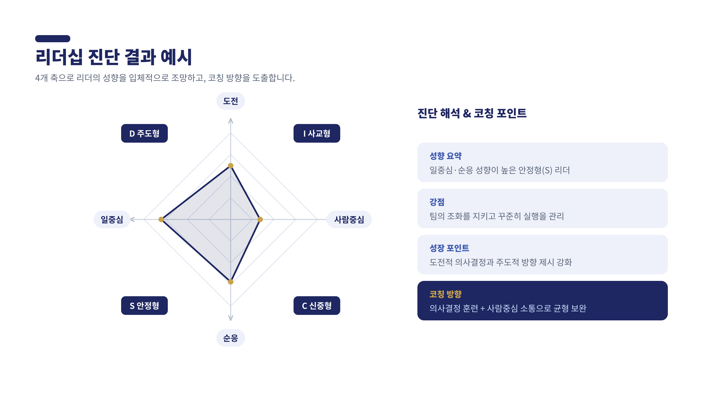

목적
기대효과
리더십 4대 역량
실무자가 아닌, 리더로서의 나를 정의합니다.
MZ 팀원과의 커뮤니케이션 방식을 훈련합니다.
방향을 정하고 책임지는 힘을 기릅니다.
위임과 동기부여로 팀을 이끕니다.
신임 리더 90일 코칭 여정
목표지향 · 도전적
사람지향 · 낙관적
팀지향 · 조화 추구
과업지향 · 분석적
진단 결과 예시
성향 요약, 강점, 성장 포인트, 코칭 방향까지 — 진단은 해석과 코칭 포인트로 이어질 때 의미가 있습니다.
